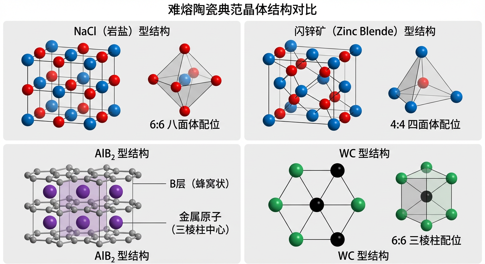
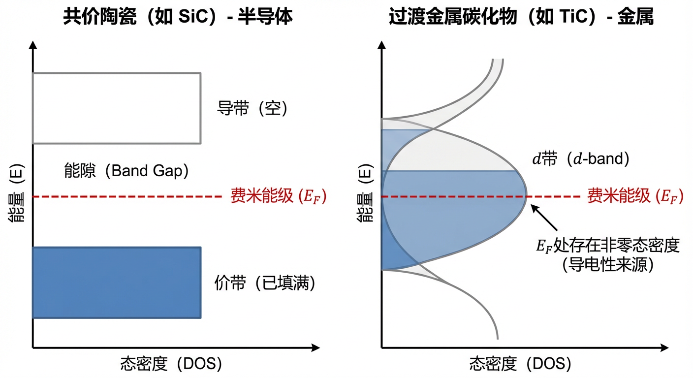
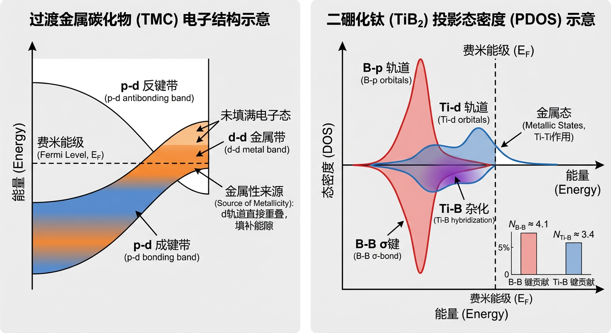

难熔陶瓷，特别是过渡金属的氮化物、碳化物和硼化物，因其卓越的硬度、高温强度和化学稳定性，在航空航天、切削工具和核工业等极端环境中扮演着至关重要的角色。然而，要充分发挥其潜力并设计出新一代高性能材料，仅仅了解其优异性能是不够的；我们必须深刻理解这些性能背后复杂的物理化学原理，并掌握从原子尺度调控宏观行为的方法。本文旨在填补这一知识鸿沟，为读者建立一个从基础科学到工程应用的完整认知框架。
本文将通过三个章节层层递进：第一章“原理与机制”，将从化学键合、晶体结构、电子结构等最基本的层面出发，揭示难熔陶瓷独特性能的物理根源。第二章“应用与跨学科交叉”，将理论与实践相结合，展示这些基本原理如何在先进合成、极端环境应用和功能器件设计等真实场景中发挥指导作用。最后，第三章“动手实践”提供了一系列计算练习，旨在巩固关键概念，并将理论知识转化为解决实际问题的能力。通过本系列的学习，您将能够系统性地掌握难熔陶瓷的设计、分析与应用。
本章旨在深入探讨构成氮化物、碳化物和硼化物这类难熔陶瓷材料的核心科学原理与内在作用机制。我们将从最基本的化学键合与晶体结构出发，逐步深入到电子结构、力学性能以及热力学稳定性等更复杂的领域。通过系统地阐释这些基本原理，我们将揭示这些材料之所以能在极端环境下展现出卓越性能的根本原因。
难熔陶瓷的独特性质根植于其复杂的化学键合，这种键合通常是离子键、共价键和金属键三种基本类型的混合体。理解这些键合成分的相对贡献是预测和解释材料性能的第一步。
一个评估键合离子性（ionic character）的有效指标是鲍林电负性差（Pauling electronegativity difference），即 $\Delta \chi$。$\Delta \chi$ 越大，电子从电负性较低的原子转移到电负性较高的原子的趋势就越强，从而导致更强的离子性。对于一个给定的前过渡金属（例如，电负性 $\chi_M \approx 1.5$ 的金属 $M$），我们可以比较其与硼（B）、碳（C）和氮（N）形成的化合物。鉴于非金属元素的电负性顺序为 $\chi_N \approx 3.04 > \chi_C \approx 2.55 > \chi_B \approx 2.0$，可以推断出电负性差的顺序为 $\Delta \chi(M\text{–}N) > \Delta \chi(M\text{–}C) > \Delta \chi(M\text{–}B)$。这意味着在这些化合物中，氮化物的离子性最强，碳化物居中，而硼化物的离子性最弱，或者说共价性（covalent character）最强 。
除了离子性和共价性，价电子浓度（Valence Electron Concentration, VEC）是理解这些材料，特别是过渡金属碳化物和氮化物性质的另一个关键概念。VEC 定义为每个化学式单元中价电子的总数。在一个简化的能带理论模型中，这些价电子填充由金属和非金属原子轨道杂化形成的成键态（bonding states）、非键态（non-bonding states）和反键态（antibonding states）。材料的内聚能和稳定性在很大程度上取决于成键态是否被优先填充，而反键态是否保持为空。对于许多具有岩盐（$\text{NaCl}$）结构的过渡金属碳化物和氮化物，研究表明，一个VEC为8的体系恰好能够填满所有的强共价成键态（源于非金属的 $p$ 轨道和金属的 $d$ 轨道杂化），此时材料的硬度和熔点等性质通常会达到峰值。例如，碳化钛（$\text{TiC}$）的VEC为 $4 (\text{Ti}) + 4 (\text{C}) = 8$，这使其非常稳定。相比之下，氮化钛（$\text{TiN}$）的VEC为 $4 (\text{Ti}) + 5 (\text{N}) = 9$。这额外的第9个电子必须占据能量更高的非键或弱反键态，这些态主要由金属的 $d$ 轨道构成。虽然这会增加费米能级附近的态密度，从而增强材料的金属性和导电性，但它也偏离了仅填充成键态的最优稳定构型 。
硼化物是一个需要特别讨论的例子。尽管金属-硼（M-B）键的离子性相对较低，但许多过渡金属硼化物仍表现出极高的熔点和硬度。这其中的奥秘在于硼原子之间能够形成坚固的共价网络。在这些结构中，硼原子可以相互连接，形成一维链、二维平面（类似石墨烯）或三维骨架。这些强大的硼-硼（B-B）共价键对材料的整体稳定性和机械性能起到了决定性作用，弥补了M-B键本身可能较弱的离子性贡献 。
化学键合的特性直接决定了原子在空间中的排列方式，即晶体结构。难熔陶瓷的许多代表性材料都可归类于几种典范的结构原型。
最常见的结构之一是 $\text{NaCl}$（岩盐）型结构。该结构可以被描述为两个相互贯穿的面心立方（FCC）晶格，其中一种原子（如金属阳离子）占据一个FCC晶格的节点，而另一种原子（如非金属阴离子）占据该晶格中所有的八面体间隙位。这导致了两种原子的配位数（Coordination Number, CN）均为6，形成高度对称的6:6八面体配位。许多过渡金属碳化物和氮化物，如$\text{TiC}$和$\text{TiN}$，都采用这种结构。这种结构偏好可以用经典的晶体化学原理解释。首先，从离子尺寸的角度看，阳离子与阴离子的半径比（$r_c/r_a$）是决定配位数的关键因素。对于稳定的八面体配位，理论上的半径比范围是 $0.414 \le r_c/r_a 0.732$。以$\text{TiN}$为例，无论我们将Ti视为 +3价（$r_{\mathrm{Ti}^{3+}} \approx 0.670 \mathrm{\AA}$）还是 +4价（$r_{\mathrm{Ti}^{4+}} \approx 0.605 \mathrm{\AA}$），相对于$\text{N}^{3-}$离子半径（$r_{\mathrm{N}^{3-}} \approx 1.460 \mathrm{\AA}$），其半径比（分别为~0.459和~0.414）都落在或接近八面体配位的稳定区间。其次，从静电相互作用的角度看，晶格能与马德隆常数（Madelung constant, $M$）成正比，后者反映了整个晶体中离子间的静电作用总和。$\text{NaCl}$型结构的马德隆常数（$M_{\mathrm{NaCl}} = 1.7476$）显著高于另一种常见的4:4配位结构——闪锌矿型（$M_{\mathrm{ZnS}} = 1.6381$）。对于像$\text{TiN}$这样具有显著离子性的化合物，更大的马德隆常数意味着更强的静电稳定化作用，因此更倾向于形成配位数更高的$\text{NaCl}$结构 。
与此相对的是具有强共价性的材料，如立方氮化硼（c-BN）。c-BN与金刚石是等电子体，它采用闪锌矿（Zinc Blende）型结构。该结构基于一个FCC晶格，其中另一类原子占据了一半的四面体间隙位，形成4:4的四面体配位。这种结构非常适合形成$sp^3$杂化共价键。闪锌矿的六方晶系等价物是纤锌矿（Wurtzite）型结构，它同样具有4:4的四面体配位，但其堆积方式是ABAB...的六方密堆积，而非闪锌矿的ABC...立方密堆积。值得注意的是，常见的六方氮化硼（h-BN）具有层状的类石墨结构，其层内为3配位的$sp^2$杂化，与纤锌矿的四面体网络完全不同 。
硼化物和一些特殊的碳化物则展现了更为独特的结构。$\text{AlB}_2$型结构是二硼化物的典型代表，如二硼化钛（$\text{TiB}_2$）。其突出特点是存在由硼原子组成的二维蜂窝状（石墨烯状）平面层，金属原子则位于这些硼层之间，处于由硼原子构成的六棱柱中心。在这种结构中，每个硼原子在层内与3个硼原子形成强共价键，同时还与上下层共6个金属原子配位。最后，$\text{WC}$型结构，以碳化钨（$\text{WC}$）为原型，是一种简单六方结构，其特殊之处在于所有原子都处于6:6的三棱柱配位环境中，这与$\text{NaCl}$型结构的八面体配位截然不同 。

晶体结构和化学键合共同决定了材料的电子结构，进而决定了其宏观物理性质，如导电性、硬度和光学特性。一个显著的例子是，为何大多数过渡金属碳化物（如$\text{TiC}$）表现出金属性，而共价陶瓷（如$\text{SiC}$和c-BN）却是半导体。
这个问题的答案可以从紧束缚（tight-binding）模型中找到。对于像c-BN和$\text{SiC}$这样的$sp^3$共价材料，其价电子总数为8个（例如，c-BN为 $3+5=8$；$\text{SiC}$为 $4+4=8$）。这些电子恰好能完全填满由$sp^3$杂化轨道形成的成键态（价带），而反键态（导带）则完全为空。由于原子间的电负性差异和强烈的共价杂化，价带和导带之间存在一个明显的能隙（band gap）。费米能级（$E_F$）正好位于这个能隙中，因此在没有外部激发的情况下没有自由载流子，表现为半导体或绝缘体。
相比之下，过渡金属碳化物的情况要复杂得多。首先，它们具有更高的配位数（岩盐结构中为6），这倾向于产生更宽的能带。其次，也是最关键的，是过渡金属 $d$ 轨道的参与。一方面，金属的 $d$ 轨道与碳的 $p$ 轨道发生强烈杂化，形成p-d成键和反键态；另一方面，由于金属原子自身构成一个面心立方亚晶格，相邻金属原子间的 $d$ 轨道会发生直接重叠（$d$-$d$ overlap）。这种 $d$-$d$ 相互作用会形成一个主要由金属 $d$ 轨道构成的能带，这个能带的能量位置常常落在p-d成键带的顶部和反键带的底部之间，有效地“填补”了可能存在的能隙。因此，费米能级 $E_F$ 往往会穿过一个或多个未被填满的能带（主要是 $d$ 带），导致费米能级处存在非零的电子态密度。这就是它们表现出金属性的根本原因 。

我们可以通过投影态密度（Projected Density of States, PDOS）这一更精细的工具来剖析特定材料的电子结构。以二硼化钛（$\text{TiB}2$）为例，其电子结构可以分解为几个关键的成键贡献。通过分析其PDOS，可以发现其内聚能主要来源于两部分强共价相互作用：硼原子层内部的B-B σ键和连接硼层与钛原子的Ti-B键。一个基于第一性原理计算的假设性例子可以很好地说明这一点：假设通过对占据态的积分，我们得到B-B和Ti-B相互作用的净成键贡献分别为 $N = 3.4$（以任意单位计）。这表明B-B键的贡献略占优势（约占总共价贡献的55%），但Ti-B键同样至关重要。此外，PDOS还会揭示在}} = 4.1$ 和 $N_{\mathrm{Ti-B}费米能级附近存在主要由Ti-Ti相互作用构成的金属态，正是这些不同类型的化学键的协同作用，共同赋予了$\text{TiB}_2$卓越的综合性能 。

材料的力学性能，如硬度和塑性，是其原子间键合强度和晶体结构的直接体现。难熔陶瓷以其极高的硬度而著称。
硬度（Hardness）是材料抵抗局部塑性变形的能力。这种抵抗力源于破坏和重组原子键所需的高能量壁垒。我们继续以$\text{TiB}_2$为例。其高达约30 GPa的维氏硬度，正是源于其三维共价键网络：既有层内极强的B-B键，又有连接各层的Ti-B键。然而，正如其电子结构分析所示，$\text{TiB}_2$中还存在金属性的Ti-Ti相互作用。这些非方向性的金属键在一定程度上降低了位错运动的能量势垒，为塑性形变提供了“润滑”。这解释了为何$\text{TiB}_2$非常坚硬，但通常不被归为“超硬材料”（硬度 40 GPa，如金刚石），因为后者通常具有纯粹的、无金属成分的强共价键网络。这个模型还预测，如果通过掺杂向$\text{TiB}_2$中引入少量额外电子，这些电子将填充Ti-B反键态，从而削弱Ti-B键并增加金属性，最终导致材料硬度的降低 。
在低温下，晶体材料的塑性形变主要通过位错（dislocations）的运动来实现。位错在晶格中移动所需要克服的本征阻力被称为皮尔斯应力（Peierls stress）。难熔陶瓷在低温下通常表现为脆性，正是因为其皮尔斯应力极高。
对于具有$\text{NaCl}$结构的过渡金属碳化物，其位错行为有其独特性。在FCC金属中，最容易的滑移发生在最密堆的${111}$面上。然而，在$\text{NaCl}$结构中，${111}$面是由同种电荷的离子构成的（全为阳离子或全为阴离子），在滑移过程中会产生巨大的静电排斥力，因此${111}$面滑移实际上是被禁止的。取而代之，滑移主要发生在电中性的${110}$面上，其滑移系为${110}\langle 1\bar{1}0 \rangle$。这些材料高皮尔斯应力的原因有两个：其一，强烈的方向性共价键使得位错的核心区域难以扩展，形成一个窄的位错核。根据皮尔斯-纳巴罗（Peierls-Nabarro, PN）模型，位错核越窄，移动它所需的应力就越高。其二，这些材料本身具有极高的剪切模量 $G$，这意味着晶格本身对剪切变形的抵抗力就非常大 。
我们可以通过比较立方氮化硼（c-BN）和氮化钛（$\text{TiN}$）来更清晰地理解键合特性对晶格阻力的影响。c-BN是纯粹的$sp^3$共价材料，而$\text{TiN}$是混合键合材料。在PN模型中，位错滑移的能量势垒由广义堆垛层错能（Generalized Stacking Fault energy, GSF或$\gamma$-surface）描述，其峰值被称为非稳堆垛层错能（unstable stacking fault energy, $\gamma_{\text{us}}$）。在c-BN中，滑移过程中需要扭曲和破坏高度方向性的$sp^3$共价键，这是一个能量代价极高的过程，导致其$\gamma_{\text{us}}$非常大（约 $4.0\,\mathrm{J\,m^{-2}}$）。相比之下，$\text{TiN}$中的金属键成分提供了电子“胶水”，使得原子在剪切过程中更容易重新排布，因此其$\gamma_{\text{us}}$要小得多（约 $0.9\,\mathrm{J\,m^{-2}}$）。由于皮尔斯应力$\tau_P$与$\gamma_{\text{us}}$正相关，且与位错核宽度（与$1/\gamma_{\text{us}}$成正比）成指数负相关，c-BN中巨大的$\gamma_{\text{us}}$导致了其极窄的位错核和极高的皮尔斯应力，使其力学行为远比$\text{TiN}$更接近理想的脆性材料 。
除了力学性能，难熔陶瓷在热力学上的稳定性是其在高温应用中至关重要的特性。在恒定温度和压力下，一个体系的平衡态由其吉布斯自由能（Gibbs free energy, $G$）最小化原理决定。
对于非化学计量化合物，如$\mathrm{TiC}x$（其中碳含量$x$可以在一定范围内变化），确定在某一温度下哪些组分是稳定存在的，标准方法是采用凸包（convex hull）构造。将不同组分$x$对应的摩尔吉布斯自由能$g(x)$绘制在$(x, g(x))$图上。所有落在这些数据点集下凸包上的点，代表了热力学稳定的单相组分。而任何位于凸包上方的点，其能量高于由凸包上相邻两点连线（称为连接线或tie-line）所代表的两相混合物的能量，因此是不稳定的。这些不稳定的组分会自动分解为由连接线两端点所代表的两种稳定相的混合物。例如，根据一组在2000 K下的假设数据，可以发现$\mathrm{TiC}}$和$\mathrm{TiC{0.75}$的自由能均高于连接$\mathrm{TiC}}$和$\mathrm{TiC{0.85}$的直线。这表明在这两个组分点，体系会发生相分离，形成$\mathrm{TiC}$的两}$和$\mathrm{TiC}_{0.85相混合物。各相的相对量（摩尔分数）可以通过杠杆定律（lever rule）精确计算 。
热力学原理同样是理解这些材料在高温氧化环境中行为的关键，这直接关系到它们作为超高温陶瓷（Ultra-High Temperature Ceramics, UHTCs）的潜力。UHTCs通常被定义为熔点在$3000\,^{\circ}\mathrm{C}$以上，并能在高温氧化环境中保持一定化学和结构完整性的材料。
以碳化铪（$\text{HfC}$）、碳化钽（$\text{TaC}$）、二硼化锆（$\text{ZrB}_2$）和二硼化铪（$\text{HfB}_2$）为例，它们都满足极高熔点的要求。然而，它们的抗氧化机制却大相径庭。当碳化物（如$\text{HfC}$, $\text{TaC}$）被氧化时，它们会生成固态的氧化物（如$\text{HfO}_2$），但同时也会产生气态的$\text{CO}$或$\text{CO}_2$。这些气体的逸出会破坏氧化物层的致密性，形成多孔、不具保护性的氧化皮。而硼化物（如$\text{ZrB}_2$, $\text{HfB}_2$）的氧化行为则更为复杂和巧妙。它们会同时生成两种产物：一种是耐火的固态氧化物骨架（如$\text{ZrO}_2$或$\text{HfO}_2$），另一种是熔融的液态氧化硼（$\text{B}_2\text{O}_3$）。在一定温度范围内，这种液态$\text{B}_2\text{O}_3$可以流动，填充固态骨架中的裂纹和孔隙，起到“自愈合”的作用，形成一层有效的阻氧层。然而，这种保护机制也存在局限性：在极高的温度下（例如超过 $1600\,^{\circ}\mathrm{C}$），$\text{B}_2\text{O}_3$的挥发性会显著增加，导致保护层的流失，最终留下一个多孔的、失去保护作用的氧化物骨架。理解这种复杂的、动态的氧化行为，对于设计和应用下一代超高温材料至关重要 。
在前几章中，我们系统地探讨了难熔氮化物、碳化物和硼化物陶瓷的基本原理、晶体结构、热力学行为以及关键性能。这些材料之所以在学术界和工业界备受关注，不仅因为其卓越的物理化学特性，更因为它们在众多前沿科技领域中扮演着不可或缺的角色。本章旨在将先前建立的理论基础与实际应用相结合，通过一系列跨学科的实例，展示这些核心原理如何在材料合成、加工、极端环境服役以及功能器件设计等多样化的真实世界情境中得以运用和拓展。我们的目标不是重复讲授基本概念，而是通过应用视角，深化对这些先进材料的理解，揭示其在解决当代工程与科学挑战中的巨大潜力。
获得具有优异性能的难熔陶瓷，其前提是精确可控的合成与加工技术。材料的最终微观结构——包括晶粒尺寸、相纯度、致密度以及缺陷分布——很大程度上取决于其“诞生”过程。因此，理解并优化这些过程是材料科学的核心任务之一。
高温合成是制备这些材料的常用方法，其中自蔓延高温合成（Self-Propagating High-Temperature Synthesis, SHS）是一种极具吸引力的技术。该方法利用高放热反应自身产生的热量来维持合成过程，一旦点燃，反应波便能自发地在反应物中传播。这种方法具有反应速度快、能耗低、设备简单等优点。例如，在合成碳化钛（$\text{TiC}$）时，可以通过热力学第一定律建立一个能量平衡模型。将反应体系视为绝热系统，反应释放的焓变完全用于加热产物。通过计算，可以得到一个理论上的最高温度，即绝热温度（$T_{\text{ad}}$）。这个温度是判断SHS反应能否自持的关键参数：只有当$T_{\text{ad}} \ge 1800 \text{ K}$），反应才能自我维持并传播。此外，该模型还能预测产物（如$\text{TiC}$）在反应过程中是否会熔化。事实上，反应物之一（如钛）在反应前沿的熔化，往往能够极大地促进原子扩散与混合，从而加速反应动力学，这对SHS过程至关重要。当然，在实际过程中，热量损失是不可避免的，精确的热力学分析必须考虑这一因素对最终产物温度和相态的影响 。
另一类经典的粉末冶金合成技术是碳热还原法。该方法通常用于从稳定且廉价的金属氧化物前驱体出发，在高温下利用碳作为还原剂来制备碳化物或硼化物。例如，在合成二硼化锆（$\text{ZrB}_2$）的过程中，可以将氧化锆（$\text{ZrO}_2$）、碳化硼（$\text{B}_4\text{C}$）和额外的碳粉混合。在此过程中，仅仅依靠$\text{ZrO}_2$和$\text{B}_4\text{C}$是无法配平化学计量关系的，必须引入碳作为关键的还原剂。通过化学热力学分析，可以估算反应达到平衡所需的温度。该计算基于吉布斯自由能判据（$\Delta G = \Delta H - T\Delta S$），当反应的吉布斯自由能变为零或负值时，反应才能自发进行。由于这类反应通常会生成气体产物（如$\text{CO}$），气体逸出造成的熵增是驱动反应在高温下进行的重要因素。因此，热力学计算为确定合成工艺窗口（如最低反应温度）提供了坚实的理论指导 。
合成的粉末需要通过烧结过程被固结成致密的块体材料。不同的烧结技术对材料的致密化速率和最终性能有着决定性影响。以碳化钨（$\text{WC}$）的致密化为例，我们可以比较几种关键技术： * 无压烧结（Pressureless Sintering, PS）：致密化的驱动力完全来自于粉末颗粒间的表面能，即毛细作用力。 * 热压烧结（Hot Pressing, HP）：在高温的同时施加外部压力，外部压力成为远超毛细作用力的主要致密化驱动力。 * 放电等离子烧结（Spark Plasma Sintering, SPS）：这是一种先进的烧结技术，它在施加压力的同时，通过脉冲直流电。电流通过颗粒接触点时产生焦耳热，使得颗粒接触区域的局部温度显著高于宏观测量的炉温。根据菲克扩散定律和阿伦尼乌斯关系，扩散速率对温度呈指数依赖关系。因此，即使SPS中局部温度仅比HP高几十度，也能导致致密化速率（即线收缩速率）呈数量级的提升。这种局部加热效应是SPS技术能够实现快速、低温致密化的核心原因 。
在许多应用中，纯陶瓷的脆性是其致命弱点。通过引入金属相制备的金属陶瓷（Cermet），如$\text{WC-Co}$，是解决这一问题的经典方案。其制备通常采用液相烧结。在此过程中，金属Co在烧结温度下形成液相，并包裹$\text{WC}$颗粒。成功的液相烧结依赖于液相对固相的良好润湿。在$\text{WC-Co}$体系中，这是一种典型的“反应性润湿”：固相的W和C会少量溶解到液相Co中，这种化学反应降低了固-液界面能，从而显著减小了润湿角，促进了液相在$\text{WC}$颗粒表面的铺展。然而，液相烧结过程对气氛的控制极为苛刻。例如，在碳含量不足（贫碳）的气氛下，体系为了达到热力学平衡，会自发形成碳含量更低的脆性三元化合物，即所谓的“eta相”（$\eta$相，如$\text{Co}_6\text{W}_6\text{C}$）。$\eta$相的形成会消耗增强相$\text{WC}$和韧性相Co，并引入极脆的组织，导致材料的断裂韧性急剧下降。因此，精确控制烧结过程中的碳势是保证$\text{WC-Co}$材料性能的关键 。
除了块体材料，这些难熔陶瓷作为薄膜和涂层也具有重要应用。物理气相沉积（PVD）是制备高质量氮化物薄膜（如氮化铝$\text{AlN}$）的常用技术。薄膜的生长过程是一个复杂的动力学问题，通常受限于两个主要步骤之一：反应物种（如Al和N）到达基底表面的速率（输运限制），或物种在基底表面通过化学反应结合成稳定晶格的速率（表面反应限制）。我们可以使用一个无量纲参数——丹姆科勒数（Damköhler number, $Da$）来判断哪个过程是瓶颈。$Da$定义为表面反应速率与物质输运速率之比。当$Da \ll 1$时，表面反应缓慢，生长受其限制；当$Da \gg 1$时，输运过程更慢，生长受输运限制。这两个生长机制，结合薄膜生长领域的经典模型——结构区模型（Structure Zone Model, SZM），可以预测薄膜的最终微观结构。例如，在低温、低原子迁移率的表面反应限制条件下，原子“粘”在其落点附近，由于“遮蔽效应”，易形成多孔的、由锥形柱状晶组成的Zone 1结构。而在高温、高原子迁移率或有离子轰击辅助的输运限制条件下，原子有足够能量在表面迁移，填充孔隙，从而形成致密的、纤维状或柱状的Zone T/Zone 2结构 。
最后，这些材料的极端化学惰性也给其他学科带来了挑战和机遇。例如，在分析化学领域，要准确测定难熔陶瓷粉末中的痕量金属杂质，样品前处理是一个难题。传统的酸消解法对于如$\text{SiC}$、$\text{BN}$等材料几乎无效。此时，浆料进样-石墨炉原子吸收光谱法（Slurry Sampling GFAAS）成为一种有效的替代方案。该技术将细小的陶瓷粉末制成稳定的悬浮液（浆料），直接注入石墨炉中进行原子化分析。它巧妙地绕过了化学溶解这一困难步骤，充分体现了材料的本征属性如何影响甚至决定了分析方法的选择 。
难熔陶瓷最核心的应用领域是作为极端（高温、高压、腐蚀、冲刷）环境下的结构材料。它们优异的性能源于其强大的化学键（共价键和离子键），这赋予了它们极高的熔点、硬度和化学稳定性。一个直观的例子是，在设计一个能够熔化铂金（熔点$1768^\circ \text{C}$）的坩埚时，共价网络固体（如石墨、$\text{SiC}$）和一些高熔点的离子固体（如$\text{ZrO}_2$、$\text{MgO}$）是首选材料，因为它们能够在远超该温度下保持结构稳定且不与熔融金属反应 。
高温抗氧化性是衡量这类材料在航空航天等领域应用潜力的关键指标。材料的抗氧化能力不仅取决于其氧化产物的热力学稳定性，更关键的是氧化产物层（氧化皮）的动力学保护性。一个理想的保护性氧化皮必须是致密的、与基体结合良好且能有效阻碍氧化剂（如氧气）向内扩散。
以$\text{TiN}$和$\text{AlN}$的氧化行为对比为例，尽管从热力学上看，二者都易于被氧化，但$\text{AlN}$的抗氧化性能远优于$\text{TiN}$。这背后有两个核心原因：其一，本征扩散动力学差异。$\text{AlN}$的氧化产物$\alpha\text{-Al}_2\text{O}_3$（刚玉）是一种缺陷浓度极低的宽禁带绝缘体，其晶格中离子（无论是$Al^{3+}$还是$O^{2-}$）的扩散速率极其缓慢。相比之下，$\text{TiN}$的氧化产物$\text{TiO}_2$（金红石）具有较高的本征缺陷浓度，导致离子在其中扩散得快得多。其二，氧化过程的体积变化。根据皮林-贝德沃斯（Pilling-Bedworth）概念，我们可以计算氧化前后固体体积的变化。$\text{AlN}$氧化为$\text{Al}_2\text{O}_3$的体积比接近1，这意味着生成的氧化皮几乎没有内应力，容易形成完整、无裂纹的保护层。而$\text{TiN}$氧化为$\text{TiO}_2$的体积则显著增大，巨大的压应力很容易导致氧化皮开裂或剥落，从而失去保护作用 。
对于在更高温度（如$1800^\circ\text{C}$以上）下使用的超高温陶瓷（UHTC），如$\text{ZrB}_2\text{-SiC}$复合材料，其抗氧化机制更为精妙。氧化过程中，$\text{ZrB}_2$生成$\text{ZrO}_2$和$\text{B}_2\text{O}_3$，而$\text{SiC}$生成$\text{SiO}_2$。$\text{B}_2\text{O}_3$和$\text{SiO}_2$会反应形成一层硼硅酸盐玻璃相。这层玻璃相在高温下具有粘性，能够覆盖在材料表面，起到“主动”保护作用。材料的损耗速率主要取决于氧气穿透这层玻璃的扩散速率。根据斯托克斯-爱因斯坦关系，溶质在液体中的扩散系数（$D$）与液体的粘度（$\eta$）成反比（$D \propto 1/\eta$）。因此，提高玻璃层的粘度是提升抗氧化性的关键。这一原理指导了UHTC的微观结构设计：例如，增加$\text{SiC}$含量可以生成更多高粘度的$\text{SiO}_2$；更进一步，可以添加第三种氧化物（如$\text{Y}_2\text{O}_3$）作为“网络形成剂”来提高玻璃网络的连接度，从而显著增加粘度。反之，添加碱金属氧化物（如$\text{Na}_2\text{O}$）作为“网络改性剂”则会破坏网络结构，降低粘度，加速氧化。这充分展示了如何通过精细的成分设计来调控材料在极端环境下的使役行为 。
除了化学侵蚀，热冲击是高温结构陶瓷面临的另一大挑战。当材料经历剧烈的温度变化时，其内部会因不均匀的热胀冷缩而产生巨大的瞬时应力，可能导致灾难性断裂。材料抵抗这种破坏的能力被称为抗热冲击性。对于像$\text{ZrB}_2\text{-SiC}$这类UHTC，一个关键的性能优势是其相对较高的热导率（$k$）。从传热学和热弹性力学的第一性原理出发，我们可以理解高热导率为何至关重要。热应力的大小正比于材料内部的温度梯度。高热导率意味着热量可以迅速在材料内部传导和重新分布，从而减小温度梯度。这可以用无量纲参数毕渥数（Biot number, $\text{Bi} = hL/k$）来量化，它代表了表面对流换热阻力与材料内部导热阻力之比。高$k$值对应低$\text{Bi}$值，意味着内部导热远快于表面散热，整个部件的温度趋于均匀，因此产生的热应力就小。在极限情况下，若$k \to \infty$（$\text{Bi} \to 0$），物体将作为一个“集总系统”均匀降温，内部不会产生任何热应力。因此，高热导率是提升陶瓷材料抗热冲击性的一个核心物理机制 。
尽管难熔陶瓷具有无与伦比的硬度和高温强度，但其固有的脆性是限制其作为结构部件应用的主要障碍。因此，提高它们的断裂韧性，即抵抗裂纹扩展的能力，是材料科学领域一个持续的研究重点。
在线性弹性断裂力学（LEFM）的框架下，材料的断裂韧性由一个关键参数——I型平面应变断裂韧性（$K_{\text{IC}}$）来表征。$K_{\text{IC}}$定义为在平面应变条件下，导致裂纹失稳扩展的临界应力强度因子值。在小范围屈服假设下，它是一个与试样几何形状无关的材料常数，是衡量材料脆性的“标尺” 。
纯的单相陶瓷的$K_{\text{IC}}$值（本征韧性）通常很低。为了提高其可靠性，研究人员开发了多种“外在韧化”机制。这些机制并不改变材料本身的断裂强度，而是在裂纹尖端后方的“尾迹区”通过各种相互作用来消耗能量，从而“屏蔽”裂纹尖端，使其感受到的实际驱动力小于外部施加的驱动力。对于$\text{ZrB}_2\text{-SiC}$这类复合陶瓷，常用的外在韧化机制包括：
这些韧化机制的效果可以通过断裂力学模型进行定量描述。一个重要的现象是R曲线行为（阻力曲线行为），即材料的断裂阻力随着裂纹的扩展而增加。这正是外在韧化机制作用的体现：随着裂纹变长，其尾迹区的桥联、拔出等相互作用区域也随之增大，提供的屏蔽效果越来越强。例如，对于一个由延性金属（如Ni）韧带增韧的$\text{TiB}_2$陶瓷复合材料，我们可以使用内聚力模型来模拟桥联韧带的行为。该模型通过一个“牵引力-分离位移”本构关系来描述桥联韧带在裂纹张开过程中的力学响应。通过能量平衡分析，可以将桥联韧带断裂所做的功（即分离功，为牵引力-位移曲线下的面积）计入总的断裂能。随着裂纹扩展，桥联区从无到有并逐渐发展成熟，其对断裂韧性的贡献也从零增加到一个稳态值。这便构成了材料的R曲线，$K_R(\Delta a)$，其具体形式可以通过模型精确预测，为材料的韧化设计提供了定量的科学依据 。
除了作为优异的结构材料，难熔陶瓷独特的电子结构也赋予了它们一系列有趣的功能特性，使其在电子、能源和信息技术等领域展现出应用潜力。
一个著名的例子是超导电性。$\text{MgB}_2$在2001年的发现是超导领域的一大突破，其$39 \text{ K}$的转变温度远高于之前的金属间化合物超导体。对其超导机理的研究揭示，其六方$\text{AlB}_2$型结构中，由硼原子构成的石墨烯状平面内的$\sigma$成键轨道在费米能级附近存在空穴型载流子，这些空穴与特定的晶格振动模式（声子）发生强烈耦合，是导致高温超导的关键。这一认识为通过“电子结构工程”来探索新的超导体提供了思路。基于刚带模型（即认为改变成分只移动费米能级而不改变能带结构），我们可以预测相关材料的超导潜力。例如，用更高价态的金属（如$\text{Al}^{3+}$）替换$\text{Mg}^{2+}$，会增加体系的价电子浓度（Valence Electron Concentration, VEC），从而填充$\sigma$带中的空穴，削弱电子-声子耦合，抑制超导电性。反之，如果在$\text{MgB}_2$中引入少量Mg空位，则会降低VEC，可能增加空穴浓度，从而在一定范围内增强超导电性。这种基于电子计数的预测方法是连接材料化学与凝聚态物理的有力工具 。
另一项重要的功能特性是热电性能。热电器件可以直接实现热能与电能的相互转换，其效率由材料的ZT值决定。塞贝克系数（Seebeck coefficient, $S$）是衡量材料热电转换能力的关键参数之一，它描述了材料在温度梯度下产生电压的本领。根据莫特公式，$S$的大小和符号与费米能级处电子态密度（或更广义的输运分布函数$\sigma(E)$）的能量导数密切相关 ($S \propto \frac{d[\ln \sigma(E)]}{dE}|_{E_F}$)。这一关系意味着我们可以通过调控材料的电子结构来优化其热电性能。例如，在一个富硼硼化物半导体中： * 对于常规的p型掺杂（如引入金属空位），费米能级位于价带内，$S$为正值。随着掺杂浓度增加，载流子浓度升高，但$S$的绝对值通常会下降。其温度依赖性在低温区近似线性增长，在高温区由于本征激发（双极效应）而下降。 * 如果通过掺杂引入一个尖锐的共振态（即在连续能带中嵌入一个局域化的窄能级），则会产生非常规的现象。当费米能级扫过这个共振峰时，$d[\ln \sigma(E)]/dE$的符号会发生改变。这意味着，即使载流子是电子（n型），当费米能级位于共振峰右侧（高能侧）的下降沿时，塞贝克系数也可以变为正值！这种通过能带共振来大幅提升甚至改变$S$符号的策略，是当前高性能热电材料研究中的一个前沿方向 。
最后，为了系统地设计和优化这些复杂的多组分、非化学计量材料，科学家们开发了强大的计算热力学工具，其中最核心的就是CALPHAD（Calculation of Phase Diagrams）方法。该方法通过建立描述各个相的热力学性质（如吉布斯自由能）的数学模型，来计算多组分体系的相图和热力学性质。对于具有宽化学计量范围的$\text{TiC}_x$和$\text{TiN}_x$等相，CALPHAD采用复合能量形式（Compound Energy Formalism, CEF）和亚点阵模型来处理。例如，对于$\text{TiC}_x$，其B1结构可以被看作由两个亚点阵构成：一个被Ti完全占据，另一个则由C和空位（Va）混合占据，记作$(\text{Ti})_1(\text{C}, \text{Va})_1$。该相的摩尔吉布斯自由能被构建为三部分之和：(1) 由端元组分（如$\text{TiC}$和假想的“TiVa”）的能量构成的参考面；(2) 由C和Va在第二个亚点阵上无规混合引起的理想混合熵；(3) 描述C和Va之间非理想相互作用的过剩能。这种模型能够精确地描述吉布斯自由能如何随成分（$x$）和温度变化，从而为材料设计、工艺优化以及新材料开发提供了强大的预测能力 。